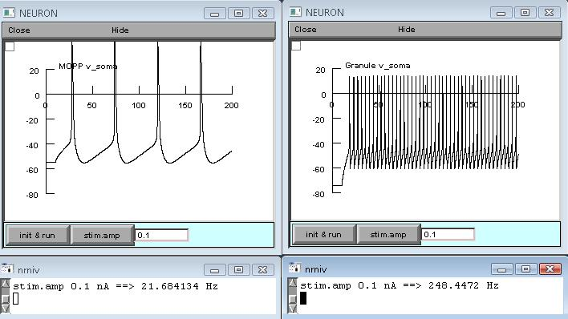

This is the readme for the NEURON model from the paper: Ferrante et al, Feed-forward inhibition as a buffer of the neuronal input-output relation. Proc Natl Acad Sci U S A. (2009) In this paper, the model shows that feed-forward inhibition (FFI) can change a steeply sigmoid I/O curve into a double-sigmoid typical of buffer systems. Specifically Fig_1B_left.hoc and Fig_1B_left.hoc respectively produce plots of firing response of the model MOPP cell (left) and granule cell (right) upon somatic current injections. Under linux/unix systems: to compile the mod files use the command nrnivmodl and run the simulation hoc file with the command nrngui Fig_1B_left.hoc Under Windows systems: to compile the mod files use the "mknrndll" command. A double click on the simulation file Fig_1B_left.hoc will open the simulation window. Under MAC OS X: to compile the mod files drag and drop the extracted folder onto the mknrndll icon. Drag and drop the mosinit.hoc file onto the nrngui icon. Once NEURON started you can set a current amplitude in the graph textbox, press the button "init & run" and check the corresponding output firing rate (Hz). When the simulations for the two cells are done the results should look similar to these:
 You can try another current amplitude and reiterate the process to build an I-f curve (see paper for details). Questions on how to use this model should be directed to mferran1@gmu.edu